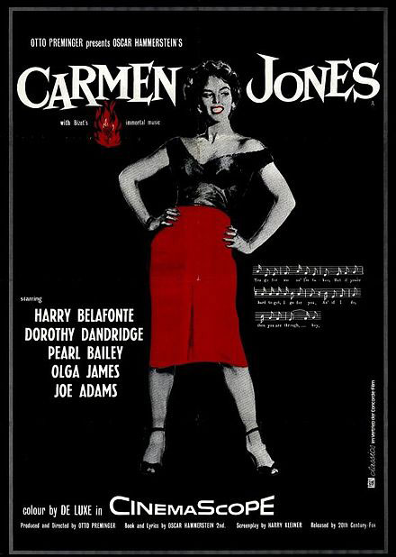
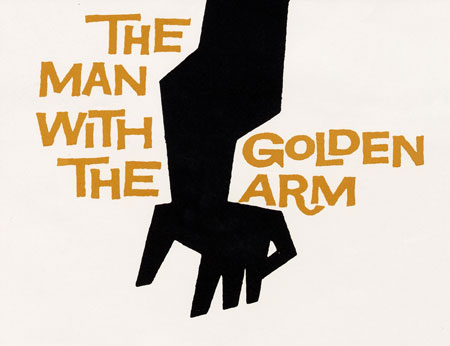
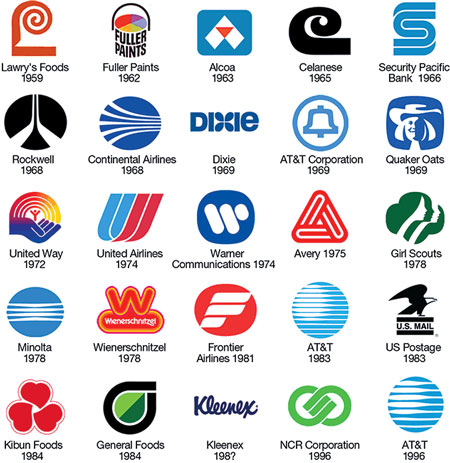
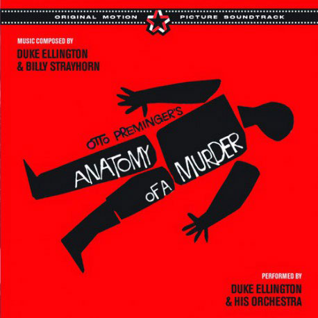
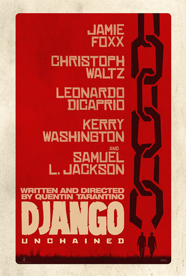

<!DOCTYPE html>
<html lang="en"></html>

<head>
        <meta charset="utf-8"/>
        <title> Saul Bass</title>
  
    <link href= 'css/style.css' type='text/css' rel='stylesheet' />
    
    <!----- link to google fonts ----->

    <link href="https://fonts.googleapis.com/css?family=Noto+Sans:400,400i,700" rel="stylesheet">
    
    
</head>

<body>
    <article id="top">
    <header>
        <h1>Deliverable 03 </h1>
        <h3 class="sub">Who is Saul Bass and how has his influence affected design today?</h3>
        
            <nav>
        <ul>
            <li><a href="#introduction">Introduction</a></li>
            <li><a href="#life">Early Life</a></li>
            <li><a href="#title_sequences">Title Sequences</a></li>
            <li><a href="#logo">Coporate Logos</a></li>
            <li><a href="#conclusion">Conclusion</a></li>
             <li><a href="#bibliography">Bibliography</a></li>
            
                </ul>
            </nav>
        
        <p id="introduction">
        <p>In this essay I will discuss how Saul Bass’s influence has affected film today, as well as how Bass became Hollywood’s most prominent designers.</p>
        
        <p><i>“Bass’s poster designs and his credit sequences for Hollywood feature films were extremely innovative in terms of their formal design, use of iconography, and narrative content.”(Horak, 2014)[page 3]</i></p> 
        However, in the 1990s and at the end of Bass’s career his wife Elaine took a greater position and took the lead of many titles, this was seen through the development of the work,
        <blockquote>“Saul was all geometry, whereas Elaine introduced curves and undulations, like the glistening water’s surface in Cape Fear, as well as long takes that contrasted with Bass’s montage technique.”</blockquote> 
        <cite>(Horak, 2014)[page 11]</cite>
        </header>
        <br>
        <hr>

<section>
<h2 id="life">Early Life</h2>
    
    

  <p>
      <span class="S">S</span>aul Bass <span class="date">(May 8, 1920 — April 25, 1996)</span> was born in the Bronx, New York, United States of America, his parents were Jewish immigrants. Saul was described as a creative child, who was constantly drawing. He studied at James Monroe High School, when he graduated, he studied part-time at the Art Students League in Manhattan until he began attending night classes at Brooklyn College with György Kepes (a master of the functional Bauhaus aesthetic). In 1938, Bass married his first wife, Ruth Cooper, they went on to have two children together; Robert 1942 and Andrea 1946. Saul always had a clear idea as to what he wanted to do with his life, “In interviews, Bass liked to say, </p>
      <blockquote>“I always knew I was going to be Saul Bass, commercial artist.””</blockquote>
    <cite>(Horak, 2014)[page 7]</cite>
    <br>
    <p>Bass’s career was incredibly successful, even though he had minimal formal academic training. His studies were limited to several night-school courses. Bass was a modest man, and when questioned in interviews, he reminded the interviewers that there were very little opportunities to study graphic design as it was considered as a low profession. Although this was true, Bass made the decision to enter the workforce rather than attend a college that offered graphic design as a course, which explains why he fitted into Hollywood so well, due to most people there learning from doing, rather than attending school, Bass stated the following quote in 1990,</p> 
    <i>“I guess what makes me uncomfortable is the word ‘philosophy’. For me design is a ‘craft’. And I try very hard to be a good craftsman.” (Horak, 2014)[page 33] </i>In summary this displays who Saul Bass was in one word; <em>craftsman</em>.</p> 
    </article>

        
        <br>
    <a href="#top">Top</a>
    <hr>
        
        <section>
    <h2 id="title_sequences">Title Sequences</h2>
            


    <p>
        Saul started his career in Hollywood during the 1940s doing print work for film and advertising. It wasn’t until 1954 when he had his first major break, with a poster for the film <i>‘Carmen Jones’</i>. Otto Preminger, the filmmaker was so impressed, that he asked him to create the title sequence as well. Bass seen this as an opportunity to enhance the audience’s experience and create a mood and theme for the movie in its opening scenes. Bass seen the potential of what he could do with the opening and closing credits and used it effectively. </p>
        <p>Saul became widely known for his innovative title sequences, he once described his main goal for his title sequences was to reach a <i>“simple, visual phrase that tells you what the picture is all about and evokes the essence of the story”</i> <cite>(Unknown, unknown)</cite></p>  
        <p>This was represented with his title sequence <i>‘The Man with the Golden Arm’(1955)</i>, which was based on a jazz musician’s struggle with overcoming heroin addiction; a taboo subject in the 50s. Due to the subject of the movie being controversial, Bass kept this consistent with his title sequence, by making the arm central, a strong image associated with heroin addiction. The titles featured a white on black paper cut-out arm of the heroin addict.</p>
     
   
            <p>From then onwards Saul Bass was highly sought after for unique title sequences, that would affect the Film Industry, as well as Graphic Design for years to come, and would change the public outlook on what design was and what it meant. Bass wanted the audience to <i>“see familiar parts of their world in an unfamiliar way” (Unknown, unknown)</i> or in other words making the ordinary seem extraordinary, these can be seen in <i>Nine Hours to Rama (1963)</i> where the inner workings of a clock become a landscape, whereby something mundane, became expansive and new. These techniques are what made Saul Bass one of the most innovative influential artists of the twentieth century.</p>
        <p>Bass worked with many exemplary filmmakers such as Alfred Hitchcock, in one of Bass’s most prominent title sequences <i>‘Vertigo’ (1958)</i> where he created a kinetic typography, a completely unique technique that pumped life into the type and graphics. Kinetic type was going to become one of Bass’s most signature features to his title sequences, where the letters dashed across the screen. It allowed him to incorporate the text and not just imagery. Titles were no longer boring text that were unimportant, they became spectacles and created anticipation and excitement, before the movie had even begun. This has not gone away and is still carried out by even the biggest corporations, such as Disney, Pixar, and Universal. Bass’s influence on film was revolutionary and changed the flow of films, instead of being thrust straight into the movie, you are able to be gently led in through the title sequence, which allows you to have a taste as to what the movie’s essence is.</p>
            <p>Of course, I cannot talk about Bass’s success without discussing his second wife, Elaine Bass (nee Makatura), who he hired as a secretary whilst still married Ruth. However, in later years Bass and Elaine got married, and in the late 1970s Elaine became a collaborator on films, and title sequence work. Elaine was given codirector credit, even though she never contributed graphic design work, or identity campaign work. In Bass’s later years, Elaine moved into a position of greater authority and is believed to have taken the lead on later titles, such as <i>‘Cape Fear’</i>. This was clearly seen as she brought femininity to the titles where it had been previously absent.</p> 
            <blockquote>“Elaine’s contributions to Saul’s work from the 1960s onward cannot be underestimated and that in some cases she was responsible for the product.”</blockquote> 
            <cite>(Horak, 2014)</cite> 
            <p>In a 1980 interview, Bass stated, <i>“That is why my collaboration with my wife Elaine in the film work is so important to me. She is the only person that I completely trust in terms of her judgement, and her sense of appropriateness–and this has been tested over a long period of time.”</i> <cite>(Horak, 2014) [page 12]</cite>
            <p>However, Bass became Hollywood’s most prominent designer, <i>“because he jealously guarded his brand–a brand so tied up with his own personality”.</i> <cite>(Horak, 2014) [page 7]</cite> 
            <p>Saul worked on title sequences for more than 40 years, and embraced an array of film making techniques, from cut-out animation such as <i>‘Vertigo’</i> to creating short films such as <i>‘Why Man Creates’ (1968)</i>. In some of Bass’s last title sequences, he worked in collaboration with his wife Elaine for projects such as <i>'Goodfellas' (1990)</i>, <i>'Cape Fear' (1991)</i> and <i>'Casino' (1995)</i>, Casino was his last title sequence. Scorsese rediscovered Bass, after admiring his work growing up, when working together Bass embraced the move away from optical technique and moved into computerized effect, which created astonishingly unique graphic designs.</p>
         <br>
    <a href="#top">Top</a>
    <hr>


            
<h2 id="logo">Saul Bass's Logos</h2>
                

         <p>I could not discuss who Saul Bass was without mentioning his work with logos, another iconic feature to a man of many talents.  Bass’s logo work is completely unique, and he is described as one of the single most successful graphic designers, during the twentieth century, at a time where graphic design was overlooked. Bass created opportunities to those young graphic designers, whose work was under appreciated as graphic design was not considered valuable to business. However, Bass created logos with a clean minimal design, that was thought through. These logos were meant to last in a rapidly growing society. Bass created timeless logos for major corporations, who still use them today, this shows how his work was ahead of its time. Some of these corporations have updated their logos slightly but kept the main essences of Bass’s work.</p>
            
            
        
        <p>Bass created logos for companies such as Kleenex, AT&T, Dixie and Quakers. Bass created a whole new area of expertise in Hollywood for that time and brought Graphic Design into a Hollywood that lacked creativity and individuality. Many artists after him after used his minimalist approach yet have incorporated the business’s personality into the logo to make it timeless and thoughtful. A technique many designers struggle to accomplish appropriately..</p>
         <br>
    <a href="#top">Top</a>
    <hr>
        
        <section>
    <h2 id="conclusion">Conclusion</h2>
         <p>
             To conclude, Saul Bass was an innovative, influential and a unique graphic designer, who pioneered in all areas he chose to spend time on. Whether this be title sequences where he could evoke emotion before a movie had even begun, film posters, logos or graphics, he changed the world of graphic design, with his Bauhaus aesthetic with flat colours and straight lines. Bass was not afraid to embrace the rapidly changing times and constructed a brand that incorporated moving graphics, animations, typography and the construction of screen space that anticipated what the future’s design could hold in a modern ever-growing world. Bass influenced not only the graphic designer’s in his time but is still challenging even the most experienced designers today, <i>“Many of his logos and images have entered into our collected cultural memory, whether <em>Vertigo’s</em> Lissajous spiral form, the “corpse” from <em>Anatomy of a Murder</em>, or the disembodied arms from <em>Exodus</em> and <em>Spartacus</em>. Young designers continually employ the “Bass look” to differentiate their work stylistically.” <cite>(Horak, 2014)[page 354]</cite></i> 
             
             <i>“Bass’s best work challenges today’s designers to create free spaces for audiences where they can not only consume images but also participate in the construction of their meaning.”<cite>(Horak, 2014) [page 355]</cite> </i>Bass has revolutionised the meaning of thoughtful design, and many designers struggle to achieve work as iconic as his. Even when they do create a memorable piece, Bass has influenced it in some way, whether it be the graphics, kinetic type or even the essence, their work can never be as original as his. For example, contemporary work such as <i>‘Ed Wood’</i>(Tim Burton, 1994) title sequence, <i>‘Se7en’</i> (Kyle Cooper, 1995) title sequence, or the pre-release poster for <i>‘Django Unchained’</i> (2012). 
             
             These random pieces represent the ,<i> “longevity and distinctiveness of the Bass brand but also to the fact that twenty-first-century Hollywood design firms have embraced that style when it suits their purposes.” <cite>(Horak, 2014)[page 7]</cite></i> Saul Bass’s legacy is most definitely within graphic design and how he influences today’s designers after decades of work.
            </p>  
             <br>
    <a href="#top">Top</a>
    <hr>
            
<h2 id="bibliography">Bibliography</h2>
            <ul>
            <li>Archieboston. (2010, February 13). Saul Bass- Advice to Design Students. Retrieved from Youtube: https://www.youtube.com/watch?v=S7l0mIlzx_I</li>
            <li>Fandor. (2018, March 29). Saul Bass: The Name Behind the Titles. Retrieved from Youtube: https://www.youtube.com/watch?v=aPBWvfMKV10</li>
            <li>FlaneurSolitaire. (2014, April 3). Saul Bass: Famous title sequences from Preminger to Scorsese. Retrieved from Youtube: https://www.youtube.com/watch?v=qqM3McG4-LE</li>
            <li>Horak, J. C. (2014). Saul Bass - Anatomy of Film Design. Kentucky: The University Press of Kentucky.</li>
            <li>Iglesias, A. (2017, November 7). Saul Bass: The Art Of The Title Sequence. Retrieved from Youtube: https://www.youtube.com/watch?v=2IoVLB1shwI</li>
            <li>Kaehler, M. (2013, August 26). Stan Evenson - "Saul Bass: The Man, The Mark, The Legacy". Retrieved from Youtube: https://www.youtube.com/watch?v=nksSIU8mNnE </li>
            <li>McGee, S. (2013, May 8). The Look of Saul Bass. Retrieved from Youtube: https://www.youtube.com/watch?v=WUOBkv5z6Ys</li>
            <li>Rizzo, F. (2010, April 11). It's a Mad Mad Mad Mad World - title sequence by Saul Bass. Retrieved from Youtube: https://www.youtube.com/watch?v=s1A7bJD3atk</li>
            <li>Uknown. (n.d.). Saul Bass. Retrieved from Famous graphic Desingers: HTTPS://WWW.FAMOUSGRAPHICDESIGNERS.ORG/SAUL-BASS</li>
            <li>Uknown. (n.d.). Saul Bass. Retrieved from Wikipedia: HTTPS://EN.WIKIPEDIA.ORG/WIKI/SAUL_BASS</li>
            <li>Unknown. (n.d.). Saul Bass. Retrieved from Art of the title: http://www.artofthetitle.com/designer/saul-bass/</li>
            <li>Unknown. (n.d.). Saul Bass. Retrieved from 99 Designs: HTTPS://99DESIGNS.CO.UK/BLOG/FAMOUS-DESIGN/SAUL-BASS-GRAPHIC-DESIGNER-OF-A-CENTURY/</li>
            <li>Unknown. (n.d.). Saul Bass. Retrieved from Design History: HTTP://WWW.DESIGNISHISTORY.COM/1960/SAUL-BASS/</li>
            <li>Unknown. (n.d.). Saul Bass. Retrieved from Saul Bass Poster Archive: HTTPS://WWW.FAMOUSGRAPHICDESIGNERS.ORG/SAUL-BASS</li>
            <li>Unknown. (n.d.). History of Graphic Design. Retrieved from History of Graphic Design: http://www.historygraphicdesign.com/the-age-of-information/the-new-york-school/182-saul-bass</li>
            <li>Videoarchives. (2017, June 26). Saul Bass - Bass on Titles (1977). Retrieved from Youtube: https://www.youtube.com/watch?v=DKu6EVKiNbg</li>
            </ul>
        </section>
             <br>
    <a href="#top">Top</a>
    <hr>
        
    <footer>
        <p><small>The content on this page is developed from original copy from Wikipedia and licensed under a Creative Commons Attribution-ShareAlike License, meaning you’re allowed to copy, distribute and transmit the work as long as it is attributed to the original authors.</small></p>
               <ul class="connections">
            <li><a href="https://www.tumblr.com/blog/ailsiseburns"></a></li>
            <li><a href="mailto:alishaburns922@gmail.com?subject=Hey!"></a></li>
            <li><a href="https://twitter.com/AilsiseBurns" ></a></li>
            <li><a href="https://github.com/AilsiseBurns"></a></li>

                  
               <!----- old links
               
    <a href="https://www.tumblr.com/blog/ailsiseburns" title="View my work" target="_blank">Ailsise Burns Tumblr Page</a>
<a href="mailto:alishaburns922@gmail.com?subject=Hey!" title="Personal email">Email me</a>
    ----------->
        </ul>
    </footer>
        </section>
</body>